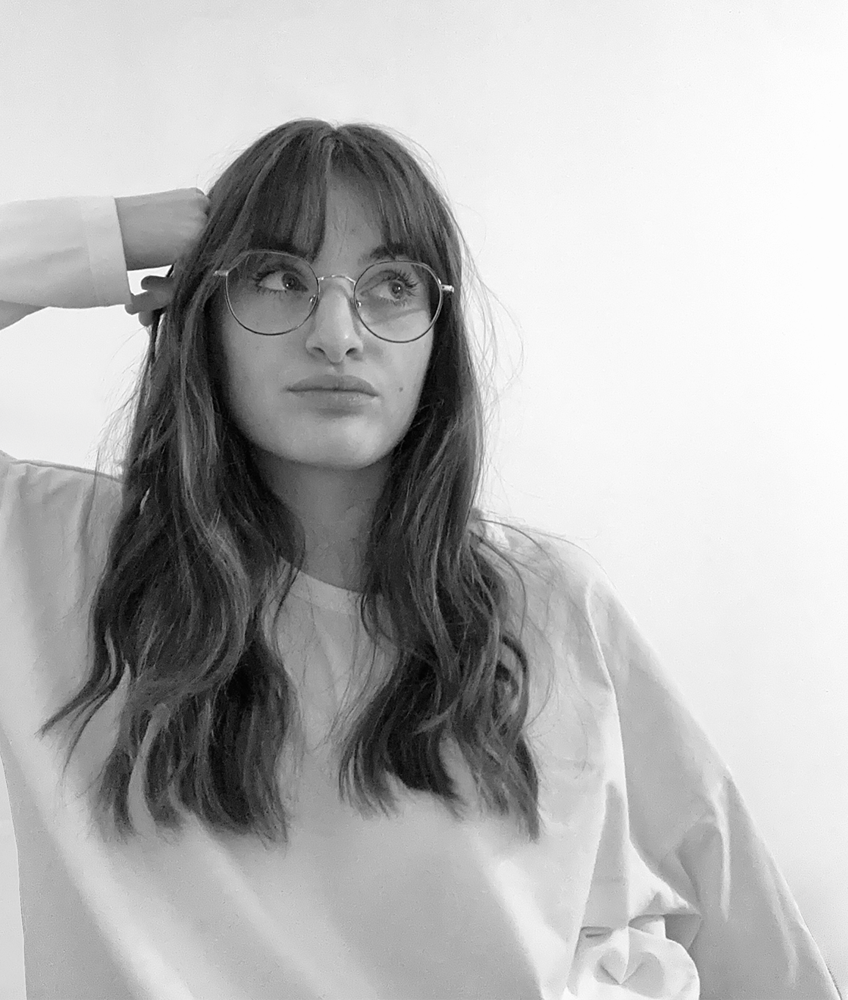

I’M ALICE, COMMUNICATION DESIGNER BASED IN MILAN.
I seek to communicate complex ideas with simplicity, guided by the belief that meaningful concepts lay the foundation for impactful design.
My background spans between Art Direction, Branding, Editorial Design, Data Visualization, and UI/UX Design, enriching my skill set and sharpening my interdisciplinary perspective.
⁕
[2023 – Present]
I am completing my Master’s Degree in Communication Design at Politecnico di Milano, which included an Erasmus experience in Austria.
[January 2025 – January 2026]
I worked as Art Director Assistant at Digital Dust Agency in Milan.
[2023]
I graduated in Communication Design at Politecnico di Milano.